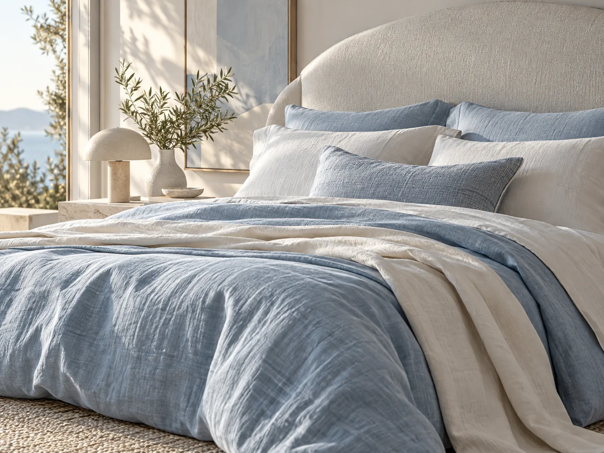

Original explorations of how an interface can help someone understand information, make a choice, or complete a task. These concepts are not commissioned client projects.
Browse by context
Choose the kind of problem.
Concepts demonstrate visual and interaction direction. Personal projects are identified separately. No client results or testimonials are implied.
Showing all 8 studies.
LOCAL BUSINESS · CONCEPT
Local service overview
Audience: A nearby customer who needs to understand whether a provider can help.
Task: Confirm the service area and request an estimate.
Design response: Put service, coverage, and the next action in a clear hierarchy, with contact details easy to find.
HOSPITALITY · CONCEPT
Neighbourhood pub
Audience: People deciding where to meet or eat.
Task: Get the atmosphere and practical visit details at a glance.
Design response: Lead with a distinctive mood while keeping kitchen hours and the venue context visible.
PRODUCT INTERFACE · INTERACTIVE CONCEPT
Wayfinding layers
Audience: Visitors navigating an unfamiliar venue or service network.
Task: Find a route, a place, or a service without interpreting everything at once.
Design response: Separate information into selectable layers with visible selection state and an uncluttered map.
EDITORIAL · CONCEPT
Form / Culture
Audience: Readers exploring visual essays and cultural work.
Task: Recognize the publication’s point of view and find a piece to read.
Design response: Use a strong typographic hierarchy and a restrained image field to keep attention on the story.
COMMERCE · CONCEPT
Whisked Away bakery
Audience: People browsing a small home bakery’s seasonal offer.
Task: Understand what is available and how to follow up.
Design response: Make the products and bakery character lead; this study does not represent a working ordering or payment system.

COMMERCE · INTERACTION CONCEPT
Sleep softly
Audience: A shopper comparing a small set of bedding options.
Task: Explore fabric, size, and an illustrative price.
Design response: Keep choices and price together. The sample bag is a visual demo, not a checkout or order system.
PRODUCT INTERFACE · CONCEPT
System map
Audience: Teams reviewing how a digital service is organized.
Task: Understand the relationship between system components.
Design response: Use a compact node map with controls that make the structure explorable.
PUBLIC INFORMATION · INTERACTIVE CONCEPT
Information, one step at a time
Audience: People looking for a clear route to community support information.
Task: Choose a need and see practical next steps.
Design response: Use plain labels, limited choices, and an expandable answer. The sample is not a live referral service.
Evidence and status
Clear about what the work is.
The examples on this page are concept studies or interactive demonstrations. They are not represented as client commissions, and no unverified business results or testimonials are attached to them.
For an original personal project with a playable demo, see Gecko Escape.
The interface-study viewer supports pause, keyboard controls, and reduced-motion preferences. This archive can also be browsed with the filter buttons above.